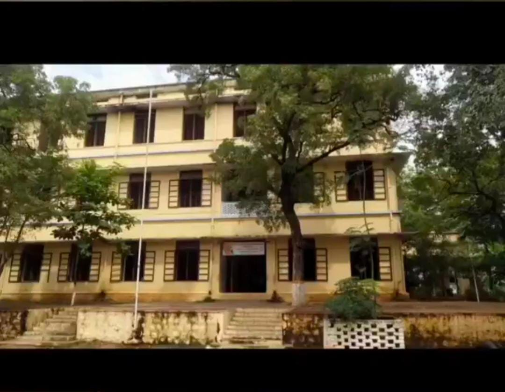

Hello, I am Sesslyn . I was born in Pulavanpatti , a small village in the Tirunelveli region. My home is situated at the bank of Thamirabarani river and the shades of WesternGhats
My father drives cab. My mother works as a teacher. I have a sister. She works as a intern in freshworks. In my family, I was the second baby girl. My parents, however , excepted a baby boy.But my mom accepted whole heartly as a gift from God. My father wasn't very pleased , so he hasn't come looking for me in nearly a month. After that, my father came to show my aunt the way, as she visited the newborn baby. My father was very strict. If I and my sister made any mistakes, he will punish us severly which started creating misunderstand between us. My father and I will never really understand one another. It will get worse if I try to solve it. I stopped communicating to my father as much possible.But I was too close for my mom, I'll share everything with my mom. I always been a mommy's girl who finds it difficult to communicate with others and who is the polar opposite of my sis
My mom is a teacher,as I mentioned earlier. My mom and my teachers are therefore close. My mom gave me academic guidance. I did quite well in my school with the assistance of God. However,I was enrolled in a basic school that only had fourth grade. My sister was therefore given greater attention by my teachers beacuse she be leaving school early. As a result, I was bad at extracurricular activities, as I didn't take part in competition. I was always compared with my sister by my relatives and they used to level tapping me.But my mom supported and prayed for me to shine like a star. Nevertheless, things changed. My parents switched my school when I was in second grade due to a number of factors. After that, I managed to conquer my stage fright and I began taking part in numerous debut , essay writing contests and fashion show competitions, which helped me gain confidence.I and my sister started to shine brightly in our new school as a result of my mother's prayer. I placed third in district on the English Proficiency Test in my fifth grade. I also suffered due to Typoid fever in the same year. I went through a lot of pain.
After two year, My mom was offered with a government job as a teacher which depends on TDTA diocese. Without knowing the consequences, My mom joined in the job, which made us to suffer till the date. My mom haven't received her salary for the past 6 years. When I was studying 9th grade,my father lost his job as an ambulance driver which is an unexpected flood for my family. In 2019, I entered 10th std and worked incredibly hard to achieve best mark. But by 2020, Covid has spread throughout the entire earth. So The TN government cancelled the board exam, it was a huge setback for my academic career. I completed my 10th in Matric school with 96%.

I'm hoping my school will sponser my future studies if I get decent grades.
Because of Covid, the sponsership was terminated and my parents transferred me to a government school with low fees.
I, however, did not agree with my parents' choice. My 11th grade is put on lockdown. Thus, I was too thrilled.
However, in September 2021, the government announced plans to reopen schools, particularly for the 12th grade.
I was overly anxious and concerned about how I would do in school.
My class teacher tortured me in a number of situations since I believed he was a bad teacher, which led to my depression.
In many circumstances, I considered suiccide since I was unable to get out of my situation.He made me to hate every teachers.
I began to worry excessively, which also had an impact on my health. I began threatening to kill myself and blackmailing my parents.
If my parents visited me in my school , I will start crying like a baby and I beg to change my school.
My family was likewise concerned for me and advised me a lot
"When you go through deep waters, I will be with you.
When you go through rivers of difficulty, you will not drown.When you walk through the fire of oppression, you will not be burned up;
the flames will not come you".-Isaiah 43:2
My parents consoled me with this word on everyday.With the help of God, I started working hard and secured school third with 95%.
I wish to pursue my college education at a reputable institution in Chennai. My dad doesn't have enough money to pay for my college feees. This led me to worry about my future. At that time, I took an exam for a service-based company at the time and got selected. It increased my desire towards IT sector. However, I've continued to apply for some major companies as well. Many people warned me I wouldn't be able to acquire a job at a renowned IT firm, so I forced me to work as hard as I could. In that company, I was chosen as well.
My sister finished 12th grade in 2020. She lost a year because of the state of my family. A brother recommended Freshworks Software Academy the following year. She attempted to pass the exam, was chosen, and her life was completely changed. She also made some wonderful friends, which motivated me to enrol in Freshworks. I passed the freshworks online exam I took, and I was chosen. After obtaining a lot of advice from my elders, I bravely made the decision to join Freshworks as a student. Now, I became a freshworks member.
I enjoy doing calligraphy, listening to music, watching movies and reading books. I am good in Team coordination and a good learner too.I am not good in controlling my emotions. I am a shy person who finds it challenging to interact with others. My friends have lied and cheated me a lot. I consequently had no close friends any longer. However, because my sister has numerous friends, I too have a large number of brothers and sisters.
I have deep desire to become an IAS officer.Everyone has told me I can't become an IAS officer.
If I had joined the IT division.
"If someone had informed you that you couldn't, you could".
I will undoubtedly pursue a career in IAS department.
I aim to pursue my goal and make wonderful friends at Freshworks. I'm hoping to improve my English and flourish in technology. "Difficulties in your life don't come to destroy you, but to help you realize your hidden potential."